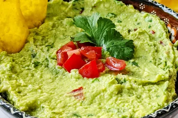

Guacamole is an avocado-based dip or spread that originated in Mexico.
It's typically made with mashed avocado and lime juice, then seasoned
with salt and cilantro. Guacamole often contains tomatoes and onions.
To make this amazing dish you will need the following ingredients:
- 3 avocados - peeled, pitted, and mashed
- 1 lime, juiced
- 1 teaspoon salt
- 2 roma (plum) tomatoes, diced
- 1/2 cup diced onion
- 3 tablespoons chopped fresh cilantro
- 1 teaspoon minced garlic
- 1 pinch ground cayenne pepper (optional)
Underneath are the steps that need to be taken to make a guacamole dish.
-
Mash avocados, lime juice, and salt together in a medium bowl; mix in
tomatoes, onion, cilantro, and garlic. Stir in cayenne pepper.
-
Serve immediately, or cover and refrigerate for 1 hour for improved
flavor.